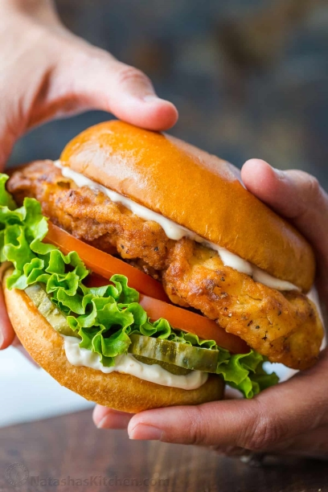

Pan Fried Chicken Sandwich

Description
If fried chicken is the Sunday special, today's recipe for quick Pan Fried Chicken Breast is the weeknight warrior.
Ingredients
- 1 cup all-purpose flour
- ½ teaspoon ground paprika
- ½ teaspoon garlic powder
- 4 skinless, boneless chicken breasts
- 5 tablespoons vegetable oil, or as needed
- 1 large tomato, sliced
- 4 leaves romaine lettuce (Optional)
- 4 whole wheat buns, toasted
Steps
- Mix flour, paprika, and garlic together in a shallow bowl. Coat chicken thoroughly with flour mixture.
- Heat oil in a heavy skillet over medium heat. Working in batches, cook chicken in hot oil until golden brown and no longer pink in the center, about 5 minutes per side. Drain on paper towels.
- Layer chicken, tomato, and lettuce on whole wheat buns.